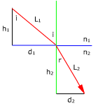

Marcha de la luz
Se aplica Snell:
n1·sen i = n2·sen r
Para calcular distancias horizontales o verticales se consideran además los triángulos rectángulos cuyas hipotenusas son los re-corridos del rayo en cada medio
